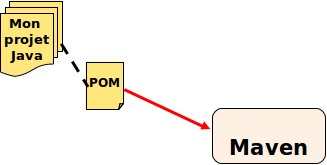

Découvrir Maven
Ninja Squad / @agnes_crepet
Objectifs de la session
- Compiler, Packager une application java avec Maven
- Comprendre les procédures de déploiement, en partie automatisees avec Maven
- Comprendre les bénéfices de l'intégration continue
Maven : Naissance du besoin
Tous les projets ont besoin d'être compilés, testés, packagés, documentés et déployés.Pourquoi ne pas capitaliser?
Maven en une phrase!
Maven sait faire l’intégration d’un projet depuis l’extraction des sources… … jusqu’au packaging de l’application, en passant par l’exécution automatique des tests de non régression, et la génération de rapport qualité!
Apports de Maven
- Amélioration du processus de développement en suivant des bonnes pratiques
- Automatisation et maîtrise du processus de construction
- Meilleure fiabilité des livrables grâce notamment à l'intégration continue
De Make à Maven!

Maven est né :
- De l’expérience et des insuffisances de Ant
- Du besoin de capitalisation des connaissances de la communauté Apache en terme de gestion de projet logiciel
Ant
- Rapide et simple au départ
- Coût de maintenance et complexification lors d’évolutions des projets (surtout si larges)
- Limitations (boucles, tests complexes, …)
Maven
- Coût de prise en main mais vite rentabilisé
- Plus haut niveau
- Plus réutilisable
le POM
La carte d'identité d'un projet Maven
C’est le lien entre le projet et Maven
POM : Project Object Model
- Il contient toutes les informations relatives au projet
- Maven s’en sert pour déterminer le processus de build
- Il doit y avoir 1 POM pour 1 artefact (jar, war, ear)
Exemple de pom.xml
<project>
<modelVersion>4.0.0</modelVersion>
<groupId>com.ninjasquad</groupId>
<artifactId>my-app</artifactId>
<version>1</version>
<packaging>jar</packaging>
<dependencies>
<dependency>
<groupId>junit</groupId>
<artifactId>junit</artifactId>
<version>4.12</version>
<scope>test</scope>
</dependency>
</dependencies>
</project>
Spécifier très précisément vos dépendances avec Maven
- Nom de la dépendance : groupId & artifactId
- Version de la dépendance
- Type de la dépendance
- Portée : compile, runtime, test, provided
Maven, gérer les dépendances (1/2)
Maven vérifie que les dépendances sont honorées avant de commencer le cycle de construction ...Sinon, le build s’arrête!
Maven, gérer les dépendances (2/2)
Pour honorer ces dépendances, il faut obtenir les librairies correspondantes.
Elles sont stockées dans des repositories publics ou privés → Rôle des Repository Managers (Nexus, Archiva)
Nexus